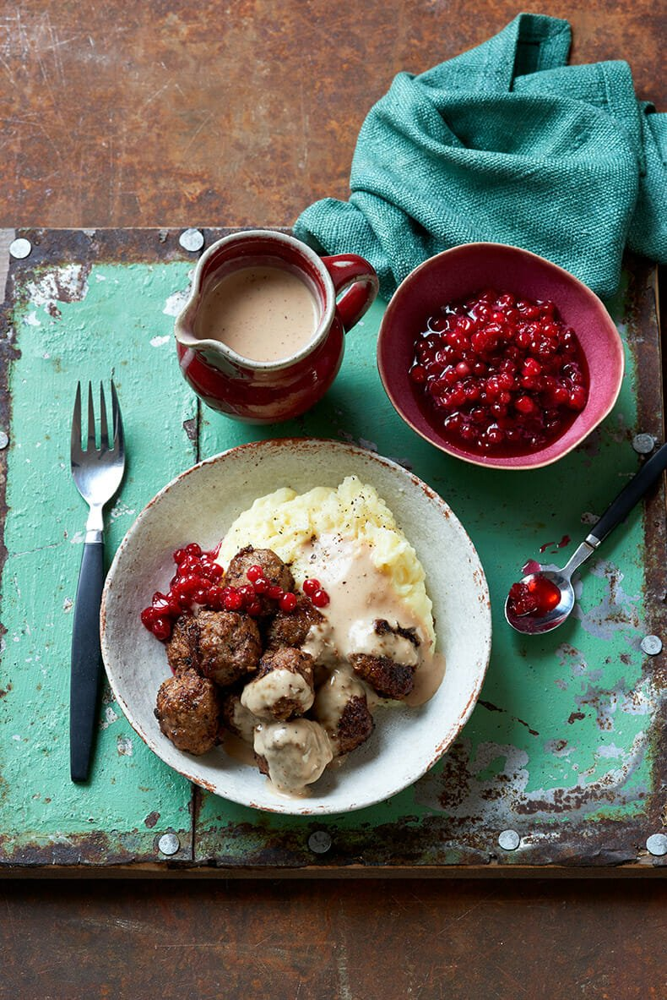

Go Back
Recipe: Real Swedish Meatballs

Posted by Scandikitchen Blomhoj
Real Swedish Meatballs
There are as many recipes for meatballs in Scandinavia as there are cooks. Recipes vary regionally, too, both in ingredients and sizing. Sadly, nowadays a lot of people buy meatballs instead of making them. The homemade version is so very wholesome and worth the effort.
Ingredients
- 30 g porridge oats or breadcrumbs
- 150 ml meat stock chicken works well, too
- 400 g minced beef
- 250 g minced pork minimum 10% fat
- 1 egg UK medium
- 2 ½ tbsp plain flour
- pinch of salt
- pinch of salt
- ½ tsp ground black pepper
- ½ tsp ground white pepper
- a dash of Worcestershire sauce or soy sauce
- 1 small onion grated
- butter and oil for frying
- mashed potato to serve
Stirred Lingoberries
Cream Gravy
Instructions
- If using oats, soak them in the meat or chicken stock for 5 minutes.
- Mix the minced meat with a good pinch of salt for a couple of minutes in a food processor to ensure it’s blended thoroughly.
- Add the eggs, flour, spices and Worcestershire or soy sauce to another bowl and mix with the soaked oats or breadcrumbs and grated onion, then add this to the meat mixture. You’ll have a sticky, but moldable, mixture. Leave the mixture to rest for 20–25 minutes before using.
- Heat up a frying pan with a small knob of butter or oil and shape one small meatball. Fry it until done and then taste it. Adjust the seasoning according to taste and fry another meatball to test it until you get it just right.
- Shape the individual meatballs in your hands – it helps if your hands are damp. Each meatball should be around 2.5 cm/1 in. in diameter, or larger if you haven’t got time.
- Melt a knob of butter in a frying pan with a dash of oil and carefully add a few meatballs – make sure there is plenty of room for you to swivel the pan round and help turn them so they get a uniform round shape and do not stick. You’ll most likely need to do this in several batches. Cooking time is usually around 5 minutes per batch. Keep in a warm oven until needed.
- When your meatballs are done, keep the pan on a medium heat. Ensure you have enough fat in there, if not, add a knob of butter to the pan. Add a tablespoon of flour and whisk, then add a splash of stock and whisk again as you bring to the boil. Keep adding stock until you have a good creamy gravy, then add a good dollop of single cream and season well with salt and pepper. The colour of the gravy should be very light brown.
To prepare the Stirred Lingonberries (rårörda lingon)
- Simply add the caster sugar and stir.
- Leave for a while and then stir again, until the sugar dissolves and the berries have defrosted.
- Store leftover Stirred Lingonberries in the fridge.
- Serve with mashed potatoes.